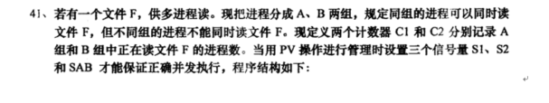
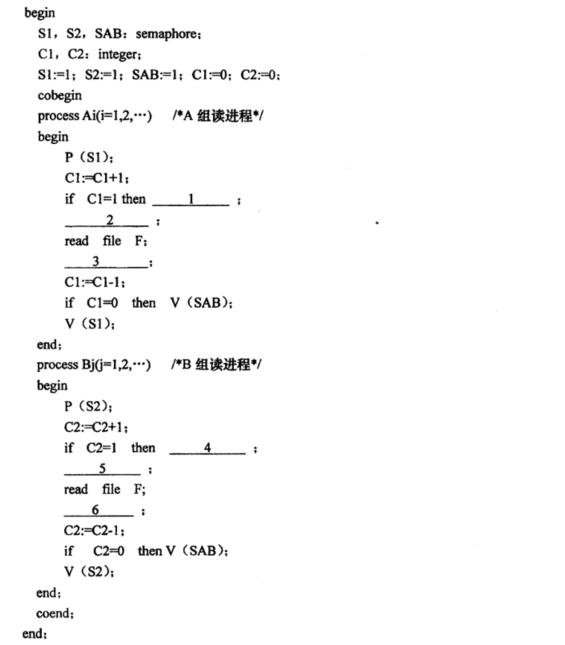
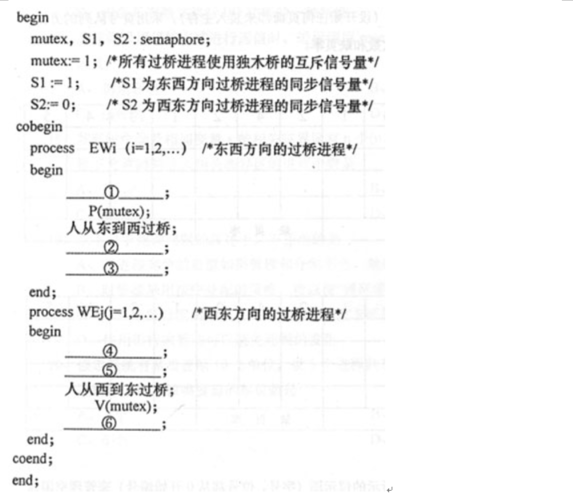

201710
四个进程A、B、C、D都要读一个共享文件F，系统允许多个进程同时读文件F。但限制是进程A和进程C不能同时读文件F，进程B和进程D也不能同时读文件F。为了使这四个进程并发执行时能按系统要求使用文件，现用PV操作进行管理，
(1)如何定义信号量及初值?
(2)在下列程序的序号处填上适当的P、V操作，以保证它们能正确地并发工作
201704
 (1) 说&明信号量S1 S2 SAB的作用
S1是针对计数器C1的互斥信号(2) 填写适当的PV操作
(1)P(SAB)201610
一条小河上有一座东西方向的独木桥，现河东、河函都有很多人排队等着过桥。规定允许两个方向轮流每次只能过一个人。如果将每个过桥者看作一个进程，现采用PV操作实现的程序结构如下：
(1)分析EWi进程、WEj进程的具体同步关系。
所有的进程必须同步的使用独木桥(2)在并发程序的带编号处填入相应的PV操作。
(1)P(S1)